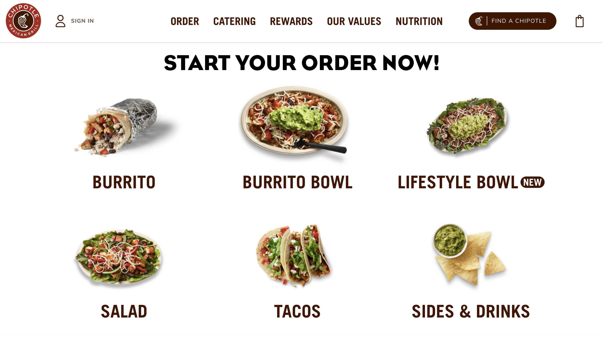
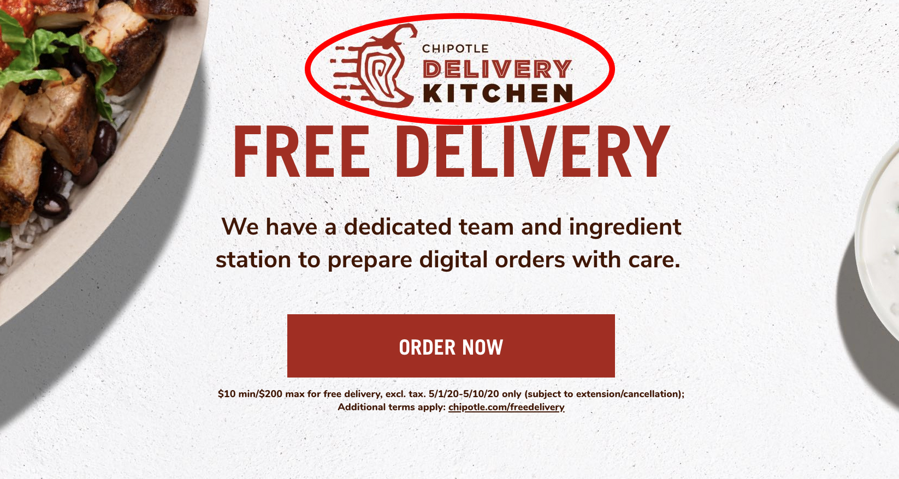
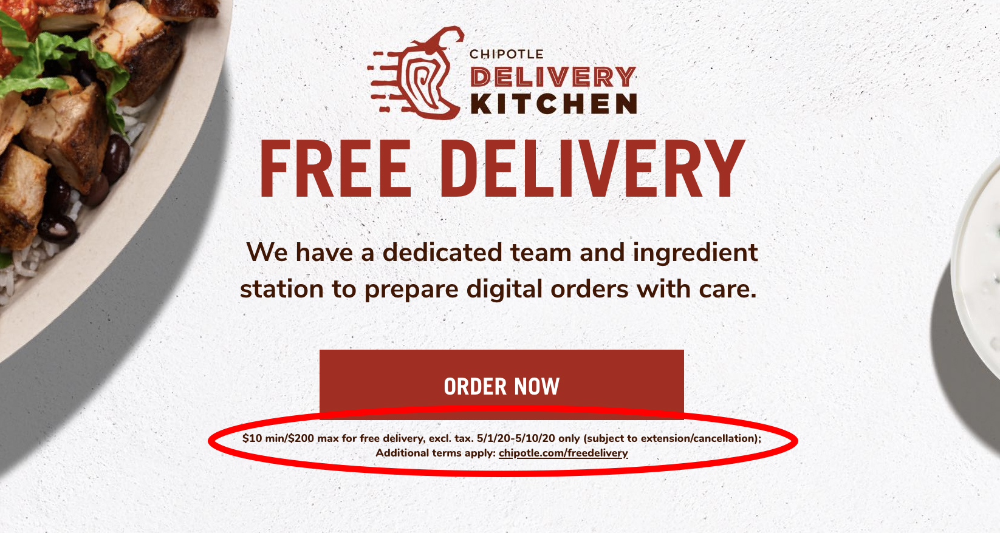
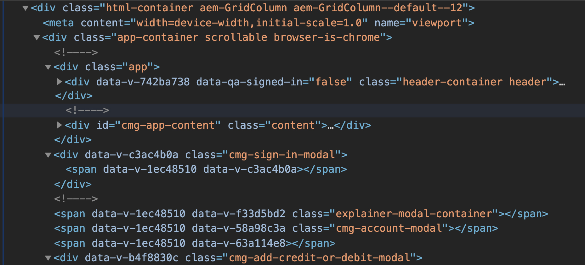

Website accessibility review of chipotle.com
In this web accessibility study I examined chipotle.com. The core purpose of this site is to provide a user interface for customers to place food orders online. My focus for this study was to investigate the user interface and HTML to decipher if the essential tasks of this site could be achieved by someone using accessibility tools.
Web Accessibility Tools and Standards
In order to complete this web accessibility review I consistently referenced the WCAG 2.1 standards. The WCAG is a set of guidelines written by the World Wide Web Consortium to make the web more inclusive for all users – with or without disabilities.
The four main principles that must be followed according to the WCAG 2.1 standards include:
- Perceivable: each block of content is perceivable to those who are visually or hearing impared
- Operable: the user interface is efficiently operable by a keyboard (tab key) or a screen reader
- Understandable: The writing in the site is clear and gives context to the clickable elements.
- Robust: The site incorporates “best practices” of HTML for all devices and utilizes ARIA attributes to bridge the gap between modern web apps and tools used by those with disabilities to navigate the web
The tool I used to investigate:
- The WAVE chrome extension is an extremely useful tool for an accessibility audit as it indicates where the accessibility errors can be found on the page and includes clickable icons positioned next them that describe the error in detail and optionally reveal the code for a deeper look.
Accessibility audit
For this review I will highlight issues (below) that I thought could be improved upon to make this site more effective for all users.
Perceivable
1. I noticed while scrolling through the homepage that the food links below the hero image aren’t given sufficient context until they are hovered over. For a mouse user it’s less confusing because as the user hovers over each link (for instance burrito) the hover state reveals the text below that says “order” with an arrow pointing to the right. Unfortunately this is not perceivable to someone who is using a keyboard to navigate the site. If any of these links are focused on with keyboard tools the user only sees a list of food items and isn’t given any context for what will happen if they enter into the link. Making content available to only one type of user is a hallmark of substandard accessibility design.
To remedy this I would add a header above this list of food items that says, “Start your order now.” Although simple, I think this would make it clearer to those who are using a keyboard to navigate the site, so they would have more context to the clickable items without needing to use a mouse.
2. While scrolling through the site I quickly noticed 2 issues in the hero image. The first issue I noticed was with the text that reads, “chipotle delivery kitchen.” The text is rasterized as an image instead of written into the code as live text. This can cause issues for someone who has specific settings in their web browser to view text at larger sizes or in a specific color that provides adequate color contrast for them to read clearly – when text is an image this is not possible. Fixing this is simple – write the text into the HTML with an <h2> or <h3> before the button, so it doesn’t break the hierarchy, but it will also be customizable for those who need more visual impact.
3. The second issue I found with the hero image is the deliberately small text that reads,“$10 min/$200 max for free delivery, excl. tax. 5/1/20-5/10/20 only (subject to extension/cancellation); Additional terms apply: chipotle.com/freedelivery below the 'order now' button. It’s tiny! And as a consumer is mostly off-putting to see text this small after the promise of “free delivery.” I don’t really understand the logic in using text this small – either make the text readable or don’t add it at all. To fix this issue, I would run the text at the appropriate size for people to read it, ideally at a text size closer to 1 rem.
4. In section 1.3.1 of the WCAG they suggest the use of semantic markup. Semantic HTML markup makes it easy for people who use screen readers to feel comfortable “knowing where they are” on a webpage. For instance, because starbucks.com uses perfect semantic markup – <nav>, <main>, and <footer>– a user who uses a screen reader is given the proper context for their location while they move through a page. In contrast, chipotle.com separates content using <div> and <span>, which doesn’t give screen reader technology enough information to discern which part of the page the user is viewing, making it confusing to navigate. Imagine driving without street signs – you may eventually get to where you wanted to go, but you could get there a lot faster if you had a reference for your location on every block.
My recommendation for this issue would be to change out the <div> tags with semantic tags and aria labels to give the user more context for their location within each page.
Operable
5. In order to test how operable chipotle.com was I used the tab method to move through the links on the homepage. Unlike starbucks.com which has incredible accessibility features and is simple to tab through to find what you’re looking for, chipotle.com is seriously flawed. I would recommend giving it a try @ chipotle.com. I found that because of the way it’s improperly coded, the user can only tab through the links in the header and footer of the home page leaving the entire <main> section unusable by people who operate a keyboard to navigate websites. Typically content in the <main> section of a website is valuable real estate and not something the company or person who owns the site wants users to pass up. This is most likely an oversight as I’m sure Chipotle doesn't want to lose customers and revenue because they failed their accessibility test.
Conclusion
Overall I think chipotle.com needs to put in a lot more effort into making their site accessible for all users. When I first visited the site, as someone who uses a mouse to navigate the web, I assumed that I would find very few accessibility issues – I was able to move around the site easily enough. However, after running a Google dev tools accessibility audit, chipotle.com scored a 55 out of 100, illustrating the lack of awareness I have as a mouse user for what makes a site truly accessible. starbucks.com, the site I’ve been using as a benchmark, scored a perfect 100. The experience of using the two sites couldn’t be more different when visiting with a screen reader enabled.chipotle.com is incredibly awkward to use, unlike starbucks.com which is navigable either way, for all users, like websites should be.